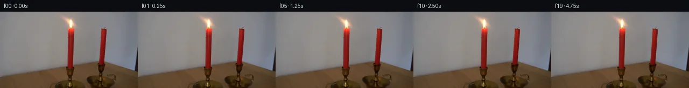

![首帧]()

Round 00
2026-11-05T05:41:41.030892+00:00像素候选变化代码 +166/−0inspection 更新
pixels f3402f6db5f562ec · code 99107adcf3598f59
查看本轮 generate.py 真实 diff
--- previous/generate.py +++ current/generate.py @@ -0,0 +1,166 @@ +"""Animate the photographed candle emission with local, anchored pixel warps.""" +from pathlib import Path +import base64 +import json +import re + +import numpy as np +from PIL import Image, ImageDraw + +from artifact_io import save + + +ROOT = Path(__file__).resolve().parent + + +def smoothstep(lo, hi, value): + u = np.clip((value - lo) / (hi - lo), 0.0, 1.0) + return u * u * (3.0 - 2.0 * u) + + +def sample_bilinear(field, xx, yy): + """Resample our own image field; values outside the image are zero.""" + h, w = field.shape[:2] + valid = (xx >= 0) & (xx <= w - 1) & (yy >= 0) & (yy <= h - 1) + xx = np.clip(xx, 0, w - 1) + yy = np.clip(yy, 0, h - 1) + ix, iy = np.floor(xx).astype(int), np.floor(yy).astype(int) + jx, jy = np.minimum(ix + 1, w - 1), np.minimum(iy + 1, h - 1) + fx, fy = (xx - ix)[..., None], (yy - iy)[..., None] + result = ((1 - fy) * ((1 - fx) * field[iy, ix] + fx * field[iy, jx]) + + fy * ((1 - fx) * field[jy, ix] + fx * field[jy, jx])) + return result * valid[..., None] + + +def build_frames(source): + src = source.astype(np.float64) + y, x = np.mgrid[:144, :256].astype(float) + + # A local least-squares wall estimate separates the photographed emission + # from the wall. Only nearby unlit wall pixels are used for the fit. + xx, yy = (x - 131) / 40, (y - 20) / 40 + basis = np.stack([np.ones_like(x), xx, yy, xx * yy, xx * xx, yy * yy], axis=-1) + wall_samples = ((y <= 38) & (x >= 87) & (x <= 171) + & ((x <= 105) | (x >= 151))) + coeff = np.linalg.lstsq(basis[wall_samples], src[wall_samples], rcond=None)[0] + wall = basis @ coeff + + # Feather the emission support on the wall; candle material below y=31 is + # never resampled. The oblique soft photographic flare is retained. + support = (smoothstep(98, 110, x) * (1 - smoothstep(145, 157, x)) + * (1 - smoothstep(29, 31, y))) + excess = np.maximum(src - wall, 0) * support[..., None] + core_weight = (np.exp(-((x - 131) / 8.0) ** 4) + * smoothstep(8, 14, y)) + core = excess * core_weight[..., None] + halo = excess - core + + # Deliberately small flame displacements in pixels. These samples describe + # an irregular continuous fluctuation around the reference flame. + height = [0, .5, 1.2, .6, 0, -.9, -1.0, 0, 1.4, 1.1, + .4, -.4, -1.1, -.3, .8, 1.0, .2, -.8, -.3, .2] + bend = [0, .35, .9, .55, .1, -.7, -.6, -.1, .65, .6, + .1, -.45, -.65, -.2, .4, .85, .2, -.55, -.3, .15] + width = [1, 1.02, .99, .94, 1, 1.025, .97, .99, 1.015, 1.04, + 1, .94, .98, 1.025, 1.02, .98, 1.005, .96, .99, 1.015] + brightness = [0, .012, .025, .008, -.006, -.025, -.045, -.012, + .024, .05, .01, -.025, -.034, .002, .023, .035, + .006, -.028, -.01, .008] + z = np.clip((31 - y) / 17, 0, 1.7) + moving = (y < 31) & (x >= 98) & (x <= 157) + frames = [source.copy()] + for n in range(1, 20): + sx = 131 + (x - 131 - bend[n] * z ** 1.4) / width[n] + sy = 31 - (31 - y) / (1 + height[n] / 17) + warped_core = sample_bilinear(core, sx, sy) + hsx = x - .25 * bend[n] * z + hsy = 31 - (31 - y) / (1 + height[n] / 100) + warped_halo = sample_bilinear(halo, hsx, hsy) + new_emission = (warped_core * (1 + .55 * brightness[n]) + + warped_halo * (1 + brightness[n])) + # Difference compositing keeps source wall texture in place. A taper + # to the attachment point prevents movement of the red wax lip. + attachment = 1 - smoothstep(28.5, 31, y) + delta = (new_emission - excess) * attachment[..., None] + out = source.copy() + out[moving] = np.rint(np.clip((src + delta)[moving], 0, 255)).astype(np.uint8) + frames.append(out) … diff truncated; 79 more lines …